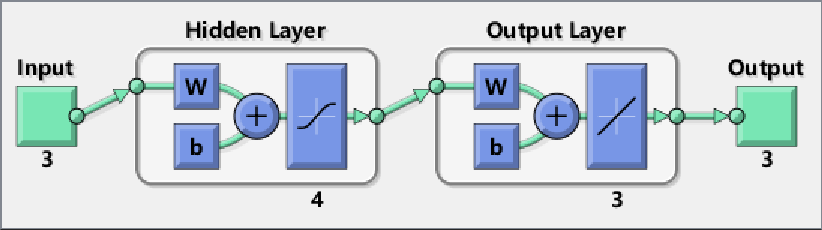

Contents
I 清除所有数据
clear all close all clc
II mapminmax学习
1. 归一化
X = [
1 1.5 2;
3 3.5 5;
5 6 8;
];
[Y, setting] = mapminmax(X, 0, 1) % 对X的每一行按照[0,1]进行归一化，结果为Y，并将归一流程存在setting
Y =
0 0.5000 1.0000
0 0.2500 1.0000
0 0.3333 1.0000
setting =
name: 'mapminmax'
xrows: 3
xmax: [3x1 double]
xmin: [3x1 double]
xrange: [3x1 double]
yrows: 3
ymax: 1
ymin: 0
yrange: 1
gain: [3x1 double]
xoffset: [3x1 double]
no_change: 0
2. 归一流程apply
testData = [1;4.5;7]; y = mapminmax('apply', testData, setting) % 按照之前的setting对testData进行归一化，结果为y
y =
0
0.7500
0.6667
3. 逆向归一
mapminmax('reverse', Y, setting) % 按照之前的setting对Y进行回退，因此结果应与X相等
ans =
1.0000 1.5000 2.0000
3.0000 3.5000 5.0000
5.0000 6.0000 8.0000
III 神经网络学习
1. 创建BP神经网络
net = newff(X, Y, 4); % p_train为输入，t_train为输出，9个节点作为隐含层
view(net)
 2. 神经网络参数
2.1 配置参数
net.trainParam.epochs = 1000; % 最大迭代此数1000次 net.trainParam.goal = 1e-4; % 方差目标，误差小于该值既会停止 net.trainParam.lr = 0.01; % 学习率
2.2 自动参数
net.numLayers % 2层：1层隐含层 + 1层输出层 net.numWeightElements % 31个链接权重 = (3input + 1b)*4隐含层 + (4隐含层 + 1b)*3output net.IW; % 输入层到隐含层的权重 net.LW; % 隐含层到输出层的权重 net.b; % 阈值 net.performFcn % 性能函数：使用均方差性能函数 net.trainFcn % 训练方法:
ans =
2
ans =
31
ans =
mse
ans =
trainlm
3. 训练神经网络
net = train(net, X, Y);
4. 模型输出
t_sim = sim(net, X) % 可以看到与Y近似
t_sim =
-0.0031 0.4990 1.0000
0.0002 0.2507 1.0004
0.0004 0.3335 0.9995